Beispiel für einen einfachen Flybarless Helikopter¶
Grundlegende Konfiguration eines Flybarless-Hubschraubers (FBL), am Beispiel eines FBL-Reglers wie dem Spirit. Anders als ein Flächenmodell ist ein Hubschrauber von Natur aus instabil — die FBL-Einheit nutzt Kreisel (Drehrate um eine Achse) und Beschleunigungsmesser (Bewegung/Orientierung), um über einen abgestimmten PID-Regelkreis (Proportional Integral Derivative) die Korrekturen für Gieren, Nicken und Rollen zu berechnen. Dabei werden Stabilität, Reaktionsfähigkeit und Überschwingen anhand der physikalischen und elektrischen Eigenschaften des jeweiligen Hubschraubers gegeneinander abgewogen.
Dieses Beispiel behandelt nur die Funkprogrammierung — den Rest des Setups entnehmen Sie bitte der Dokumentation Ihrer FBL-Einheit. Gute Kenntnisse der Hubschraubertechnik und -bedienung werden vorausgesetzt.
Danger
Um Verletzungen zu vermeiden, entfernen Sie vor Beginn die Rotorblätter.
Schritt 1. Bestätigen Sie die Systemeinstellungen¶
Kanalreihenfolge AETR, Erste vier Kanäle fest auf AUS — die Spirit FBL-Einheiten erwarten, dass die SBUS-Kanäle genau in dieser Reihenfolge angeordnet sind, obwohl sie bei der eigenen Einrichtung intern TAER verwenden. Registrieren Sie den Empfänger (wenn Ihr Empfänger ACCESS ist) und binden Sie ihn über die Funktion HF-System.
Schritt 2. Identifizieren Sie die benötigten Servos/Kanäle¶
| Funktion | Kanal |
|---|---|
| Roll (Querruder) | — |
| Pitch (Höhenruder) | — |
| Gas | — |
| Gieren (Seitenruder) | — |
| Kreiselverstärkung | 5 |
| Kollektiver Pitch | 6 |
| Einstellungen Bank | 7 |
| Rettung | 8 |
Schritt 3. Erstellen Sie ein neues Modell¶
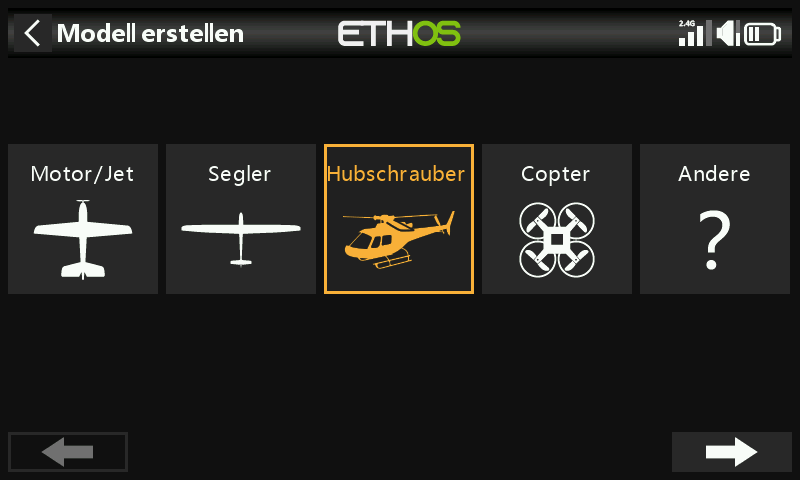
Legen Sie in der Modellauswahl eine Kategorie „Heli“ an bzw. wählen Sie sie aus, starten Sie den Assistenten zur Modellerstellung und wählen Sie Flybarless:
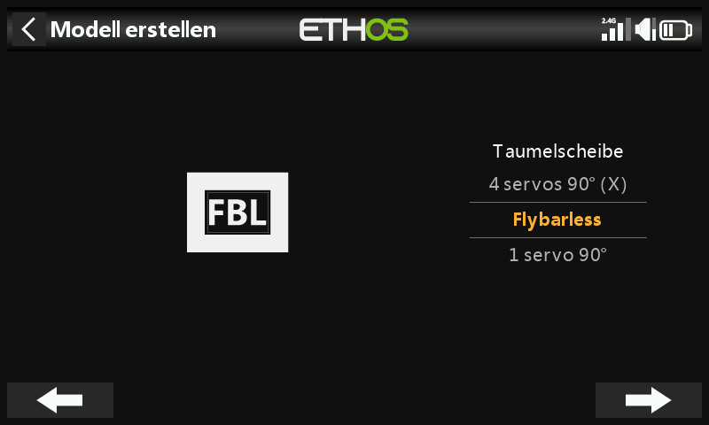
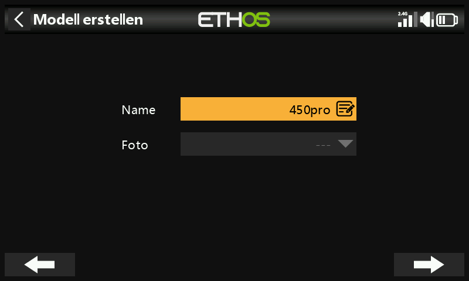
Definieren Sie einen Namen und ein Modellbild für Ihr Modell.
Schritt 4. Überprüfung und Konfiguration der Mischer¶
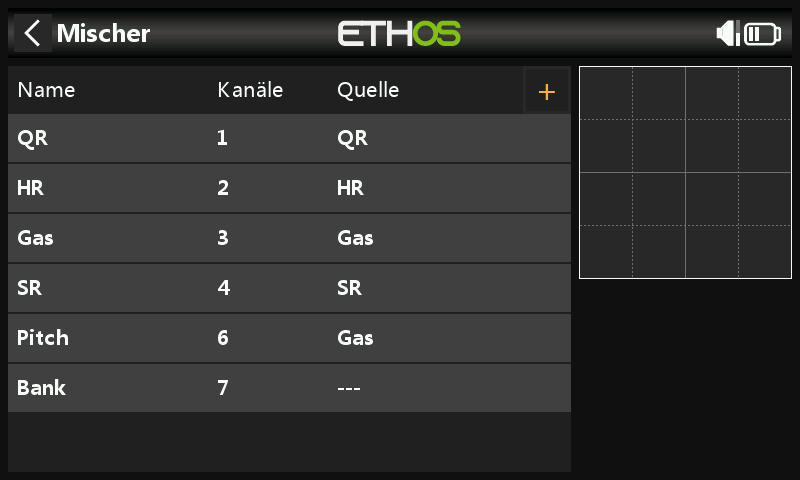
Der Assistent erstellt Querruder, Höhenruder, Gas und Seitenruder in der AETR-Sequenz, Pitch auf Kanal 6 und FBL Bank auf Kanal 7:
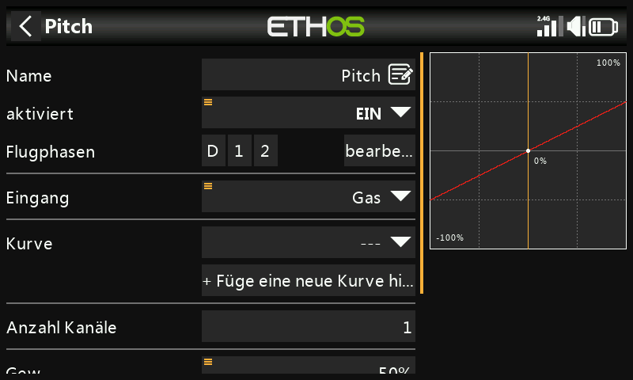
Bestätigen Sie, dass auf Kanal 6 der kollektive Pitch liegt. Zwei weitere Kanäle müssen manuell mit Freien Mischern hinzugefügt werden: Kreiselverstärkung (Kanal 5) und Rettung/Stabi (Kanal 8).
Querruder / Höhenruder / Seitenruder — auf diesen Kanälen muss nichts hinzugefügt werden; Gewichtungen und Expo werden von der FBL-Einheit gehandhabt, so dass der Sender nur die linearen Steuereingänge weitergibt.
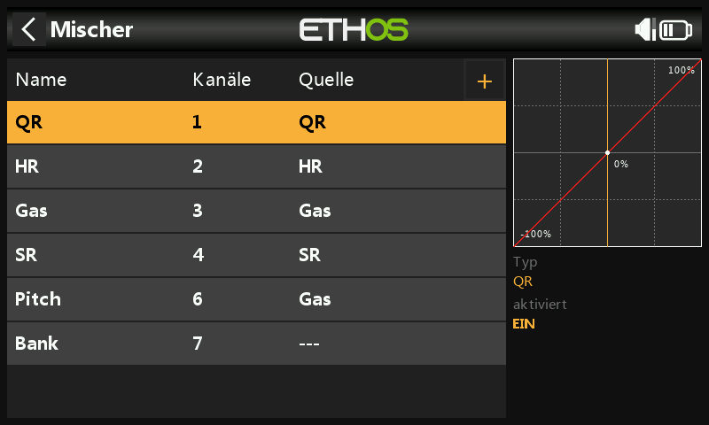
Kollektiver Pitch — einfach eine lineare Kurve; Sie müssen nur den Ausgangskanal (normalerweise Kanal 6) bestätigen. Wie oben werden Gewichtung und Expo von der FBL-Einheit übernommen, nicht hier.
FBL Bank — die drei Einstellungsbänke des Spirit (verschiedene Flugstile, unterschiedliche Sensorverstärkungen für niedrige oder hohe Drehzahlen oder für Anfänger, Acro und 3D — alternativ auch nur zum Abstimmen Ihrer Einstellungen), zugewiesen auf einen 3-Positionen-Schalter, z. B. SE:
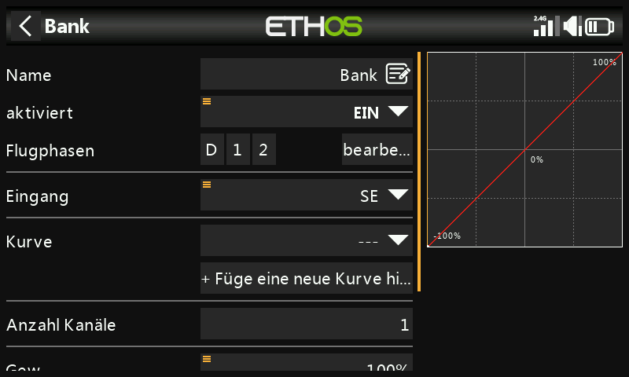
Kreiselverstärkung — als freien Mischer nach dem letzten Kanal hinzufügen. Die Kreiselverstärkung ist in der Regel ein fester Wert: Setzen Sie die Quelle auf Spezial > Wert = 0 und wählen Sie dann den gewünschten Verstärkungswert mit Offset (der endgültige Wert muss eventuell im Flug ermittelt werden). Weisen Sie als Ausgangskanal 5 zu:
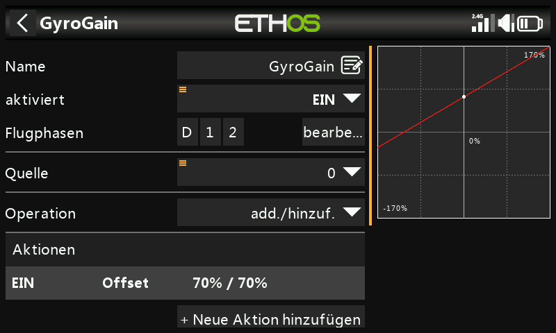
Flugphasen konfigurieren¶
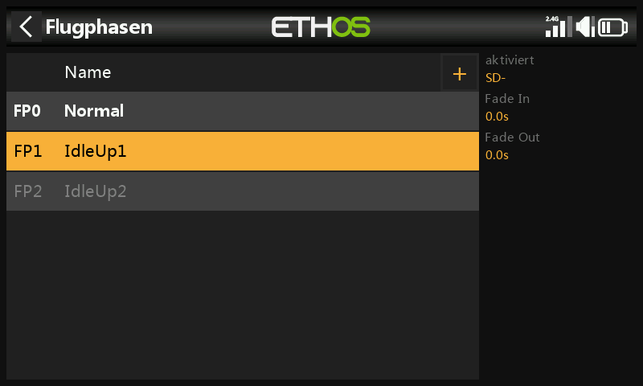
Drei Flugphasen: Benennen Sie den Standard-Flugmodus in Normal um und fügen Sie Idle Up 1 und Idle Up 2 am Schalter SD hinzu.
Konfigurieren Sie den Gasmischer¶
Drei Gaskurven, eine je Flugphase, jeweils als benutzerdefinierte Kurve:
- Normal — für das Hochfahren und den Start: Die Kurve beginnt bei −100 % (Motor aus) und steigt dann gleichmäßig an. Eine 7-Punkte-Kurve mit „Glätten ein“ hat sich bewährt; die endgültigen Kurvenwerte müssen möglicherweise im Flug ermittelt werden.
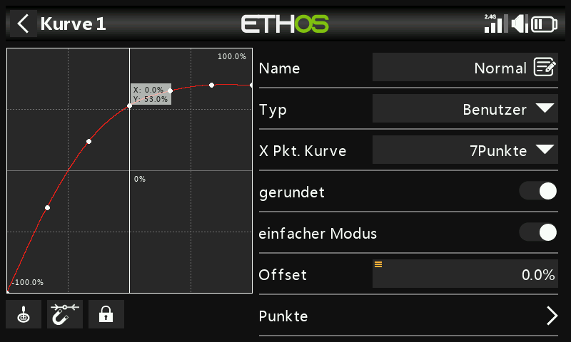
- Idle Up 1 — für die meisten Flüge: Die geradlinige Kurve bedeutet eine konstante Gaseinstellung, um die Rotoren mit gleichmäßiger Drehzahl drehen zu lassen; die Bewegung des Hubschraubers wird stattdessen durch den kollektiven Pitch, das Querruder (Roll) und das Höhenruder (Nick) gesteuert. Achten Sie darauf, dass es keinen großen Sprung zwischen Normal und Drehzahl 1 gibt, damit der Übergang fließend erfolgt. (Die meisten FBL-Geräte verfügen zudem über eine Governor-Funktion, die die Rotordrehzahl auch bei aggressiven Flugmanövern konstant hält — Einzelheiten dazu finden Sie im Handbuch der FBL-Einheit.)
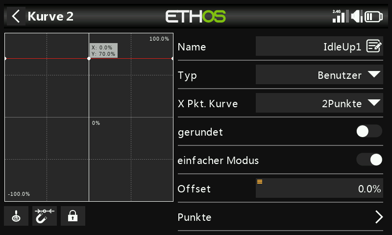
- Idle Up 2 — für aggressivere Flüge (Kunstflug und 3D); der endgültige Wert muss ebenfalls im Flug ermittelt werden.
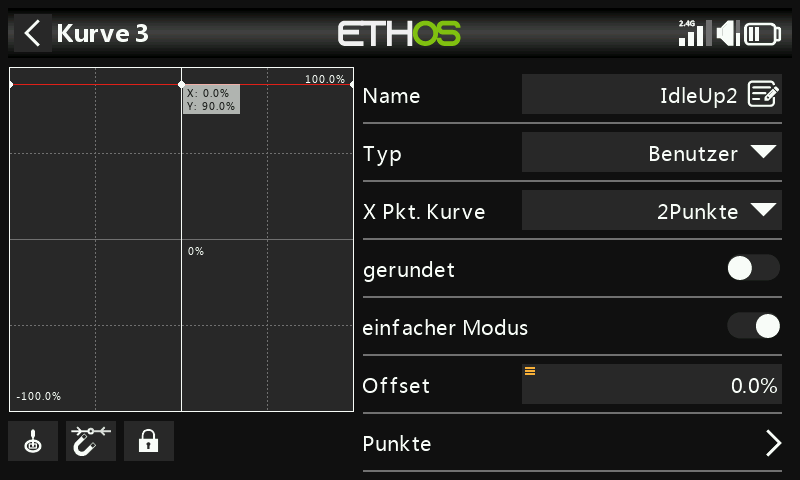
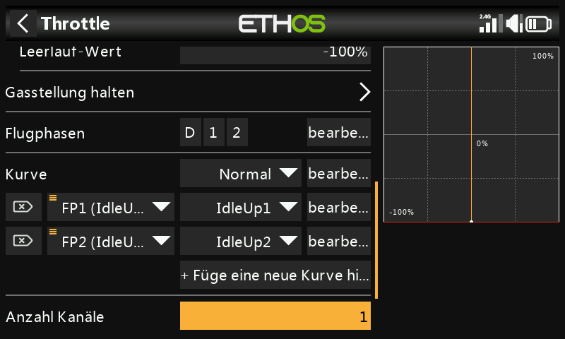
Gasabschaltung — weisen Sie z. B. den Schalter SG↑ zu und schalten Sie FlipFlop ein: Sobald Sie den Schalter nach oben bringen, wird der Gashebel abgeschaltet, und aufgrund der FlipFlop-Einstellung kann er nur neu aktiviert werden, wenn sich der Gasknüppel zuvor in der unteren Position (aus) befindet.
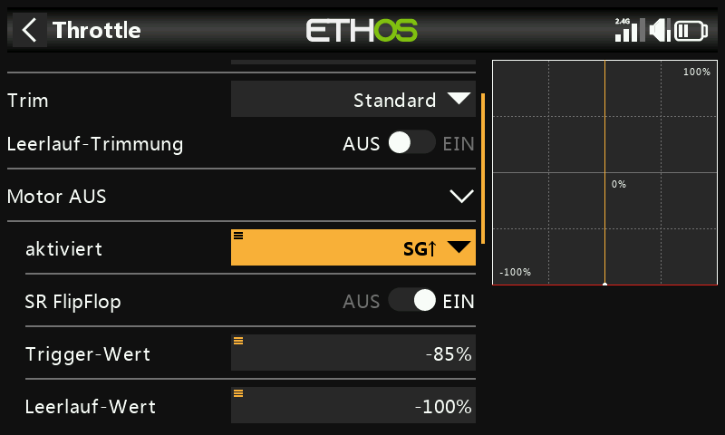
Rettung/Stabi — in ähnlicher Weise zuweisen, z. B. dem Schalter SA auf Kanal 8.
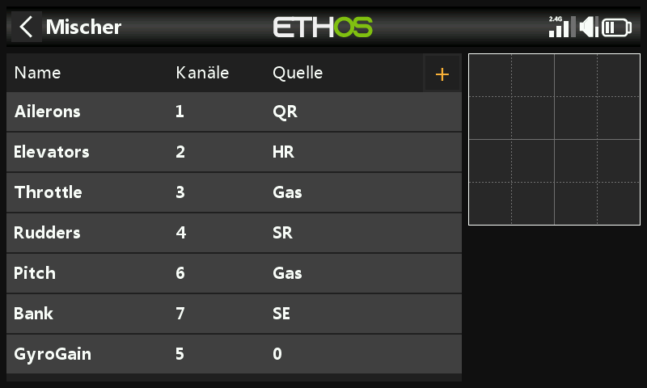
Schritt 5. FBL-Einrichtung¶
- Installieren Sie das FBL-Konfigurationsprogramm — z. B. die Spirit Settings-Software auf Ihrem PC.
- Verbinden Sie Ihren Empfänger mit dem FBL-Gerät gemäß dessen Verkabelungsplan — üblicherweise den SBUS-Ausgang des Empfängers mit dem RUD-Anschluss der FBL-Einheit (beachten Sie, dass einige Spirit-Modelle einen SBUS-Adapter benötigen), alternativ über F.Port1 oder FBUS.
- Verbinden Sie das FBL-Gerät mit Ihrem PC — entweder mit Kabel oder über Bluetooth, gemäß dessen Handbuch.
!!! danger Schließen Sie noch keine Servos an!
- Aktualisieren Sie ggf. die FBL-Firmware auf die neueste Version (siehe Registerkarte „Update“ im Einstellungstool).
- Allgemeine Einstellungen (Registerkarte „Allgemein“ in der Spirit-Einstellungssoftware):
- Empfängertyp: Futaba SBUS oder FrSky F.Port (je nach Bedarf), anschließend das System neu starten.
-
Kanalzuordnung (bei AETR aus dem Assistenten):
Funktion Kanal Gas 1 Querruder 2 Höhenruder 3 Seitenruder 4 Kreisel 5 Pitch 6 Bank 7 Rettung/Stabi 8 (Diese Reihenfolge ergibt sich daraus, dass die Spirit-Einheit Annahmen über die Position der Kanäle im SBUS-Datenstrom macht.)
-
Kanal-Grenzwerte (Registerkarte „Diagnose“) — für den ordnungsgemäßen Betrieb der FBL-Einheit müssen die Senderkanalgrenzen kalibriert und die Mitten überprüft werden:
-
Stellen Sie zunächst am Sender sicher, dass alle Subtrimmungen und Trimmungen auf Null gestellt sind.
- Stellen Sie den kollektiven Pitch auf die mittlere Knüppelposition ein, um in den Ausgängen exakt 1500 µs zu erhalten.
- Schalten Sie die FBL-Einheit ein und überprüfen Sie, ob die Quer-, Höhen-, Nick- und Seitenruderkanäle auf der Registerkarte „Diagnose“ jeweils auf 0 % zentriert sind (das FBL-Gerät erkennt die Neutralstellung automatisch bei jeder Initialisierung).
- Bewegen Sie die Knüppel an ihre Grenzen und passen Sie die entsprechenden Werte Min/Max auf der Seite „Ausgänge“ für jeden Kanal so an, dass die Registerkarte „Diagnose“ exakt +100 % bzw. −100 % anzeigt. Die Bewegungsrichtung der Balken muss ebenfalls mit den Knüppeln übereinstimmen.
!!! warning Verwenden Sie für diese Kanäle niemals Subtrim- oder Trimmfunktionen Ihres Senders — die Spirit FBL-Einheit betrachtet diese als Eingangsbefehl und nicht als Kalibrierung.
- Passen Sie den Offset-Wert im Kreiselverstärkungs-Mischer an, um sicherzustellen, dass Heading Lock erreicht wird.
Danach sollte alles in Bezug auf den Sender konfiguriert sein — fahren Sie mit dem Rest des Setups gemäß dem Handbuch der FBL-Einheit fort.